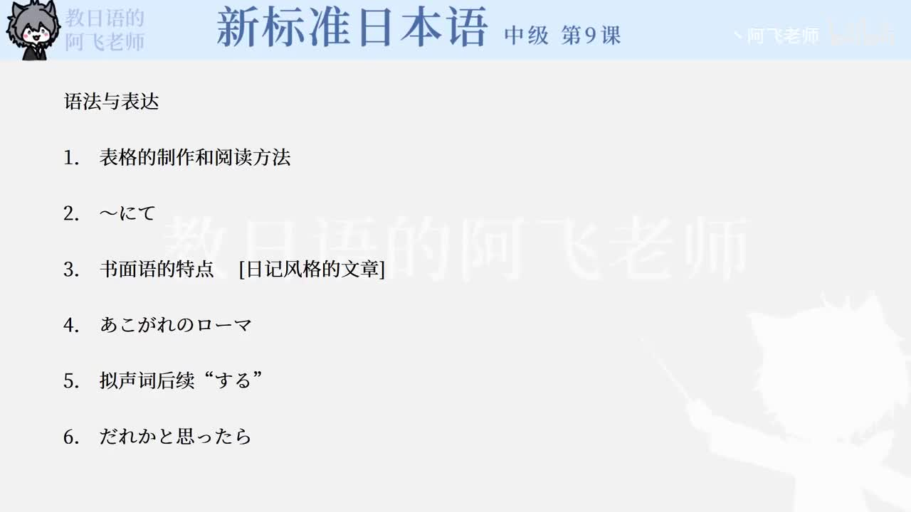

Bilibili P145 · Text Reading
イタリア旅行
从旅行日程表进入罗马、庞贝和自由活动的旅行日记，练习「はずだが」「と思ったら」「なんて」「らしい」「のかもしれない」等表达。
全篇听力精讲
按 5 段旅行日记轮播。每段依次播放日语原文、中文意思、结构说明、断句提示、语法要点和词汇搭配。
这篇课文在讲什么
日程表先用表格式语言压缩交通、住宿和观光安排。
旅行日记用短句和省略写到达、观光、庞贝见学和自由活动。
跨文化体验从问候语和东方人身份，写海外旅行中的紧张与亲近感。
阅读推进链
1 · 行程パリ経由、ローマへ
2 · 到达ガイドさんだった
3 · 观光ニーハオからこんにちは
4 · 遗迹ポンペイ見学
5 · 相通東洋人ということで
逐段精读
重点语法与表达
旅行阅读词汇
练习与复习
来源说明：视频标题、时长、CID 和首帧来自 Bilibili 公开视频接口；课文原文来自本地《新标准日本语》中级第9课教材数据，并按学习页格式整理读音、中文、结构、语法和练习。